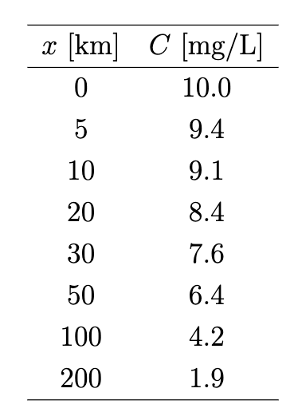

Water quality modeling - BOD in rivers (I)
Contents
Water quality modeling - BOD in rivers (I)#
Introduction#
Dissolved oxygen (DO) is important in water systems that ensures the ecological health of the aquatic environment. Biochemical oxygen demand (BOD) is the amount of DO that must be present in water for microorganisms to decompose organic matters in the water. BOD is used as a measure of the degree of pollution and is an important parameter in water quality modeling.
A simple exponential decay model#
If conventional pollutant are discharged into rivers or streams, the concentration of pollutant in the river may be concerned, and it would be a function of distance in the downstream away from the source of the pollutant. The relationship between the pollutant concentration and the downstream distance must be a function of flow velocity and the rate of decay of pollutant in the receiving water. A simple mass balance model can be used to describe this process and the solution for the pollutant concentration (\(C\)) is an exponential decay function:
where \(C_0\) is the source concentration, \(u\) is flow velocity, \(k\) is the decaying rate, and \(x\) is the downstream distance.
If we have a following BOD data set measured at various locations of a stream with a pollutant discharge at the initial BOD concentration is 10 mg/L.
{kind=link}
Box question 1
Plot the BOD concentration as a function of \(x\) using above data, and determine the degradation rate of BOD in the stream. The mean velocity of the stream is 0.4 m/s.
Hint
You might need numpy.polyfit function or least-square regression function numpy.linalg.lstsq
After you finish, you should have something like this (I have used two equations to fit the data, one with intercept and the other crossing the origin):
{kind=link}
Streeter-Phelps equation#
The above example shows a steady state stream with a first-order decaying of BOD concentration at a constant decaying rate. We also neglect the reaeration process in the above example. To include reaeration, Streeter and Phelps developed a simple mass balance equation to account for the opposite process of deoxygenation in reaeration process, known as Streeter-Phelps equation:
where \(C\) is DO concentration, \(L\) is BOD concentration, \(C_s\) is saturated DO concentration, and \(k_d\) and \(k_a\) are rate of deoxygenation and reaeration, respectively. This equation can also be written in the format of DO deficit equation:
We have shown that BOD concentration is exponentially decaying in the stream, giving:
where \(L_0\) is the ultimate BOD, i.e., initial oxygen demand.
Substituting Eq.(10) into Eq. (9), we have:
We can solve Eq. (11) to obtain the DO deficit as a function of downstream distance in a stream.
Take-home work#
Write a computer program to solve Eq. (11) using following parameters:
Parameters
deoxygenation rate: \(k_d = 0.3\) /day; reaeration rate: \(k_a = 0.4\) /day; initial oxygen demand: \(L_0\) = 10 mg/L; initial oxygen deficit: \(D_0\) = 0 mg/L; saturation DO concentration: \(C_s\) = 12 mg/L; flow velocity \(u\) = 0.4 m/s.
Use
scipy.integrate.odeintsolver to solve the ODE Eq. (11) for \(x\) from the source to 500 km downstream.Plot DO deficit as a function of \(x\) (Your figure 1).
In a second figure (Your figure 2), plot DO concentration as a function of \(x\). Meanwhile, plot BOD on the right y-axis with the same \(x\)-axis.
Calculate the analytical solution of the Streeter-Phelps equation, and compare whether your numerical solution collapse onto the analytical solution curve. Plot the comparison in your figure 2.
Hint
The analytical solution is: